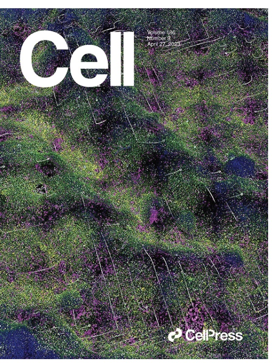
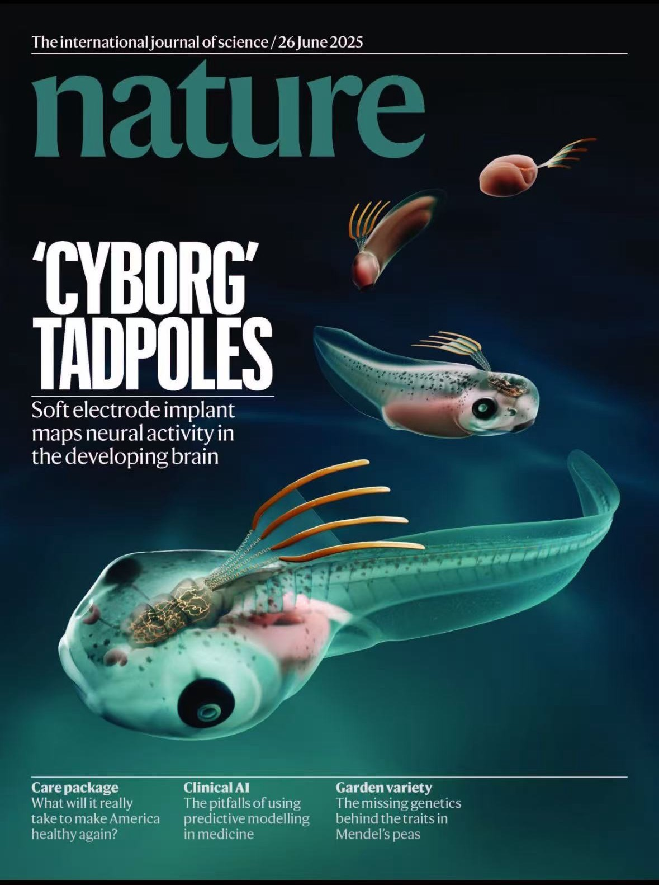
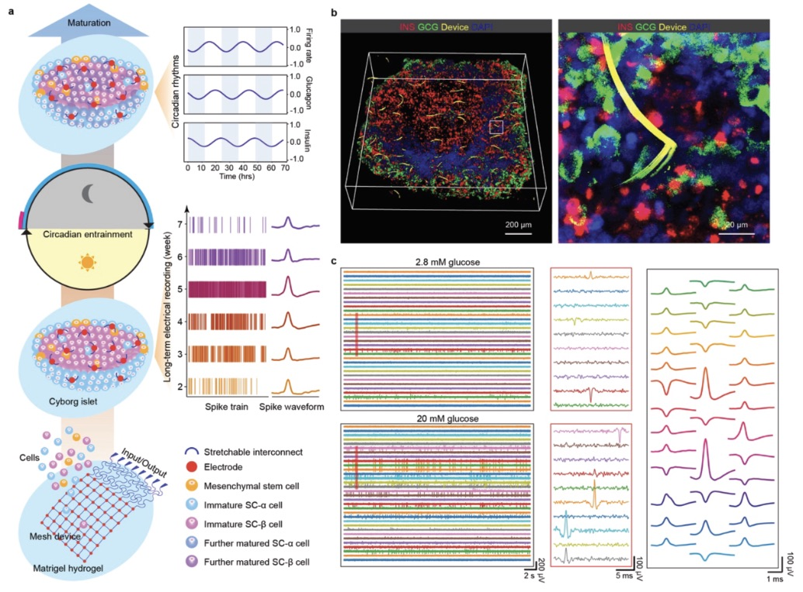

Cell · 2023 · Cover
Multimodal charting of molecular and functional cell states via in situ electro-sequencing

Nature · 2025 · Cover
Brain implantation of tissue-level-soft bioelectronics via embryonic development

Science · 2026
Implanted flexible electronics reveal principles of human islet cell electrical maturation